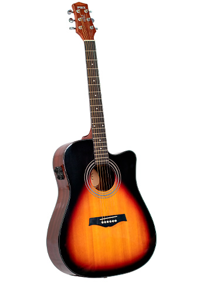
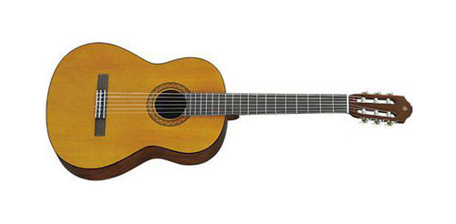
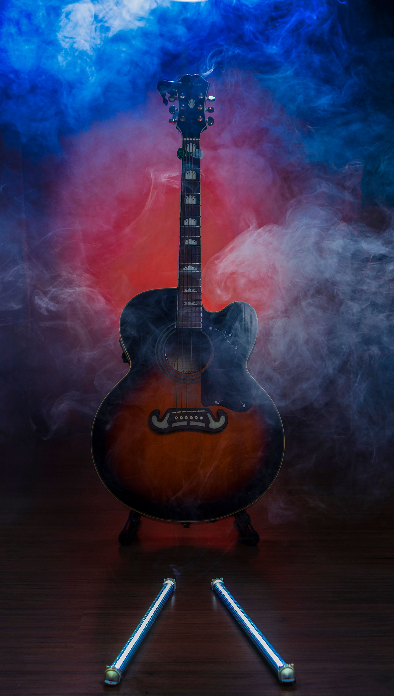

Boas-vindas à Era do Balanço Apressado
A Bossa Nova emergiu no final da década de 1950 nas praias da Zona Sul do Rio de Janeiro como uma renovação sofisticada do samba tradicional.

Origens e Pilares Musicalmente Revolucionários
Com influências do jazz americano e a cadência do samba carioca, o estilo conquistou ouvintes no mundo inteiro.
Principais Instrumentos e Variantes
- Violão acústico com cordas de náilon
- Piano de cauda com harmonia jazzística
- Trio de Jazz-Bossa
- Acompanhamento orquestral
- Bateria tocada suavemente com vassourinhas
- Baixo acústico ou elétrico em marcação sutil
Álbuns Históricos e Essenciais
- Chega de Saudade (1959) - João Gilberto
- Canção do Amor Demais (1958) - Elizeth Cardoso
- Getz/Gilberto (1964) - Stan Getz e João Gilberto
- The Composer of Desafinado, Plays (1963) - Antônio Carlos Jobim


Deseja participar do nosso clube de colecionadores de vinil e receber novidades exclusivas? Acesse o formulário e faça a sua Inscrição no Clube do Vinil.